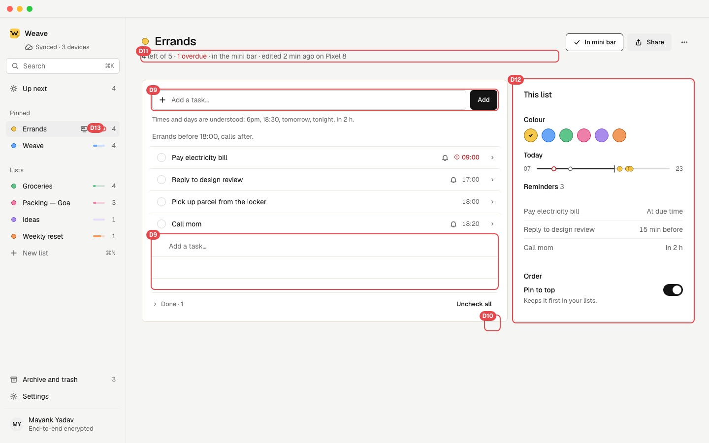
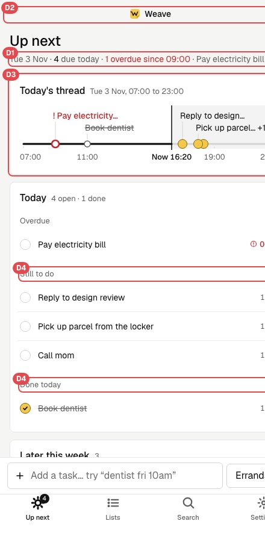
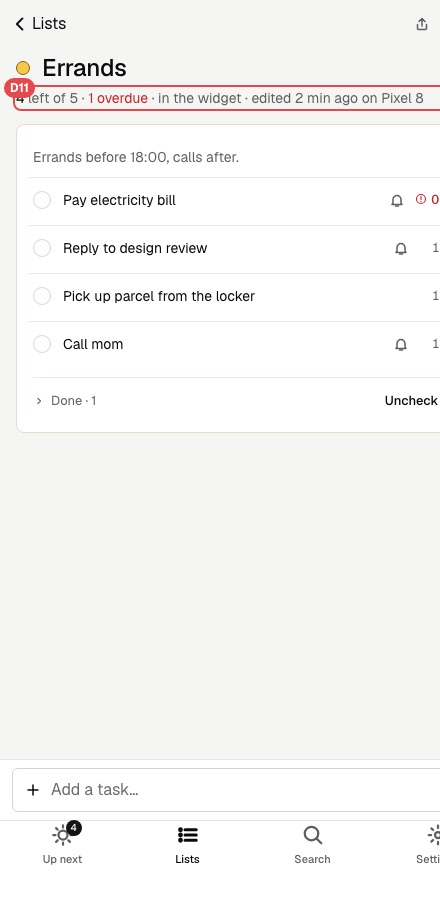

Left: the app before the clutter rules (screenshots, 3 Nov). Right: the live app now, after the rules (design playbook C1–C12) were applied to every screen. Red boxes mark what each item changed. The right side is the real prototype: click, tick and type in it.
D1Date moves above the title; one fact under it: what's left and what's next.
D4No "Still to do" or "Done today" labels: overdue first, done last.
D5Lists card (repeats the sidebar) and On screen card removed; Later this week moves up.
D6Thread legend removed; the marks are labelled.
D7One field: no dropdown, no Add button; the list is a chip inside; the hint shows on focus.
D13Sidebar keeps the count only, no progress bar.
A list · desktop
Before

After (live)
D9One place to add: a row at the end of the list. The box at the top goes.
D10Row chevron only on hover or focus (hover a row on the right to see it).
D11The line under the title is one fact: what's left and what's next. "In the mini bar", the overdue count and "edited…" are said elsewhere (button, red row, ••• menu).
D12No side panel: colour is on the title dot, Pin is in •••. The list keeps a reading width (760 px) so times stay near their tasks.
Up next and a list · iPhone
Up next, before

Up next, afterList, before

List, after
D1Same header as desktop: date above, one fact below. No two-line sentence.
D2The "Weave" logo row goes; the tab bar says where you are.
D3The labelled thread (cut-off labels) becomes the one-line strip in the Today card.
D8"Pick up parcel from the locker" no longer cuts off: the time column fits its content.
Also applied (clutter check on the other screens)
E3"Uncheck all" lives only beside Done, no longer also in •••.
E4Today card drops "4 open · 1 done": the header already says 4 left.
E5Settings: the Mini bar intro no longer reads back the controls beside it.
E6Mini bar: while the sheet is open the bar's count fades, since the sheet header says it.